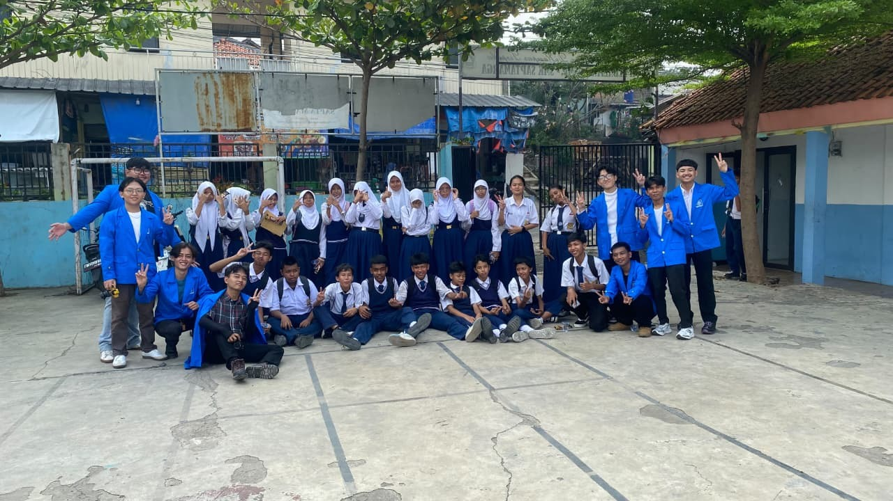

Cek sebelum sebar.
Informasi perlu diperiksa sebelum dibagikan kepada orang lain.
KELOMPOK 14 · OKTOBER 2026
Edukasi Penggunaan Teknologi yang Bijak pada Siswa SMP Sapta Marga Cibinong.
Belajar berinternet dengan bijak, menjaga sikap, dan membawa nilai Pancasila ke ruang digital.

01 / TENTANG KEGIATAN
Melalui tema “Pancasila dalam Ilmu: Teknologi”, mahasiswa mengajak siswa memahami penggunaan internet yang bertanggung jawab dalam kehidupan sehari-hari.
Materi disampaikan dengan bahasa sederhana melalui tanya jawab, permainan “Boleh atau Tidak Boleh?”, dan diskusi kelompok. Siswa kemudian membuat komitmen untuk menggunakan teknologi secara positif.
BEKAL UNTUK RUANG DIGITAL
Jujur, menghargai orang lain,
dan menjaga persatuan.
Informasi perlu diperiksa sebelum dibagikan kepada orang lain.
Kesadaran menjaga data pribadi menjadi bagian dari pembelajaran penggunaan internet.
Menghargai orang lain dan menjaga bahasa saat berinteraksi di internet.
PENGABDIAN KEPADA MASYARAKAT
CIBINONG – Delapan mahasiswa Program Studi Ilmu Komunikasi Universitas Bina Sarana Informatika (UBSI) menggelar kegiatan Pengabdian kepada Masyarakat di SMP Sapta Marga Cibinong, Pabuaran, Kabupaten Bogor, pada Oktober 2026. Tema yang diangkat adalah “Pancasila dalam Ilmu: Teknologi”.
Ponsel dan internet sudah menjadi bagian dari keseharian siswa SMP, mulai dari mencari bahan belajar sampai berkirim pesan di grup. Di sisi lain, ada risiko yang ikut menyertai, seperti hoaks, perundungan di internet (cyberbullying), dan data pribadi yang kurang dijaga. Mahasiswa mengaitkan persoalan itu dengan nilai-nilai Pancasila, misalnya jujur, menghargai orang lain, dan menjaga persatuan.
Materi disampaikan dengan bahasa sederhana dan diselingi ice breaking serta tanya jawab. Siswa juga memainkan permainan “Boleh atau Tidak Boleh?”, berdiskusi dalam kelompok, lalu membuat komitmen untuk memakai teknologi secara positif. Di akhir acara, mahasiswa membagikan hadiah kepada siswa yang aktif.
Dari pengamatan tim pelaksana, siswa terlihat lebih paham bahwa informasi perlu dicek sebelum dibagikan, data pribadi perlu dijaga, dan bahasa di internet perlu tetap santun. Mereka juga lebih kompak saat berdiskusi dan lebih berani bertanya. Dengan skala penilaian 1 sampai 5, skor kesadaran penggunaan internet naik dari 2 menjadi 4, begitu pula skor musyawarah dan kerja sama. Skor kepercayaan diri untuk bertanya naik dari 3 menjadi 4.
Pihak sekolah membantu menyediakan tempat, menentukan peserta, dan mendampingi siswa selama kegiatan berlangsung.
Tim pelaksana menilai hasil ini masih gambaran awal. Agar bertahan menjadi kebiasaan, siswa perlu terus diingatkan di sekolah maupun di rumah. Tim menyarankan sekolah melanjutkan edukasi literasi digital dengan contoh yang dekat dengan siswa, seperti media sosial, grup percakapan, dan gim daring.
CATATAN TIM PELAKSANA
Skala penilaian 1–5.
Berdasarkan pengamatan tim pelaksana.
Kesadaran penggunaan internet
Musyawarah dan kerja sama
Kepercayaan diri untuk bertanya
Hasil ini merupakan gambaran awal, bukan kesimpulan perubahan jangka panjang. Pembiasaan tetap membutuhkan pendampingan berkelanjutan di sekolah dan di rumah. Naskah tidak merinci instrumen penilaian atau jumlah peserta yang dinilai.
03 / DOKUMENTASI
Klik foto untuk melihat lebih dekat.
04 / KONTAK KEGIATAN
Informasi kegiatan Pengabdian kepada Masyarakat
Kelompok 14 · Universitas Bina Sarana Informatika.
Program Studi Ilmu Komunikasi
WhatsApp +62 857-7101-2668 ↗Email natanizzwardana@gmail.com ↗